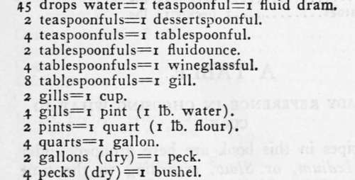
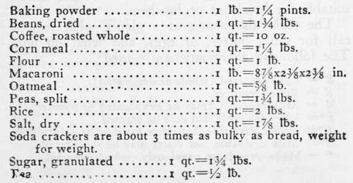

Chapter XXIII. Cook's Miscellany
Description
This section is from the book "Camping And Woodcraft", by Horace Kephart. Also available from Amazon: Camping and Woodcraft.
Chapter XXIII. Cook's Miscellany
Dish Washing
Gilbert Hamerton, in his "Painter's Camp, dwells lovingly upon all the little details of camp life, excepting this:
5 p. m. Cease painting for the day. Dine. . . . After dinner the woeful drudgery of cleaning-up ! At this period of the day am seized with a vague desire to espouse a scullery-maid, it being impossible to accommodate one in the hut without scandal, unless in the holy state of matrimony: hope no scullery-maid will pass the hut when I am engaged in washing-up, as I should be sure to make her an offer.
There is a desperately hard and disagreeable way of washing dishes, which consists, primarily, in "going for " everything alike with the same rag, and wiping grease off one dish only to smear it on the next one. There is another, an easier, and a cleaner way: First, as to the frying-pan, which generally is greasiest of all: pour it nearly full of water, place it level over the coals, and let it boil over. Then pick it up, give a quick flirt to empty it, and hang it up. Virtually it has cleaned itself, and will dry itself if let alone. Greasy dishes are scraped as clean as may be, washed with scalding water, and then wiped. An obdurate pot is cleaned by first boiling in it (if you have no soap powder) some wood ashes, the lye of which makes a sort of soap of the grease; or it may be scoured out with sand and hot water. Greasy dishes can even be cleaned without hot water, if first wiped with a handful or two of moss, which takes up the grease; use first the dirt side of the moss as a scourer, then the top. To scour greasy knives and forks, simply Jab them once or twice into the ground. Rusty ones can be burnished by rubbing with a freshly cut potato dipped in wood ashes. The scouring rush (Equisetum hymenale), which grows in wet places and along banks throughout the northern hemisphere, has a gritty surface that makes an excellent swab. It is the tall, green, jointed, pipe-stem-like weed that children amuse themselves with, by pulling the joints apart. The sooty outside of a pot is readily cleaned with a bit of sod ("monkey soap ").
In brief, the art of dish washing consists first in cleaning off nearly all the grease before using your dish-cloth on it. Then the cloth will be fit to use again. Dish-cloths are the supplies that first run short in an average outfit.
Cook's Measures.
Outfitter's Data.
Bacon, breakfast..........i flitch=5-8 lbs., average.
Salt pork................i side=30-4o lbs., average.
Salt pork................i belly=2o lbs., average.
Butter, closely packed......i Ifc.=i pint.
Butter, creamery..........i Ib.=4^x2*/2X2^ in.
Eggs, desiccated..........i tb.=6x3X3 in.=4 doz. fresh.
Eggs, fresh..............1 doz. (average) =1^ lbs.
Lard ....................3 tb. pail = 5x5 in.
Lard ....................5 lb. pail=6x6 in.
Milk, evaporated.........7 oz. can=2l/ix21/i in.
Milk, evaporated.........12 oz. can=3^x3 in.
Milk, evaporated.........1 lb. can=4^x3 in.
Apples, evaporated.......1 tb. (14 oz.) =7^x4^x2 in.
Apples, evaporated.......1 peck=6 tbs.
Corn, canned.............1 ca.n=2%lbs.—^%x^}i in.
Fruit, canned, small can, same as corn. Fruit, canned, large can, same as tomatoes.
Tomatoes, canned........1 can=2j/2 tbs.=4^x4^ in.
Lemons..................1 doz.=2 lbs.=2 qts.
Raisins, stemmed.........1 tb.=i^ pints.
Carrots..................1 qt.=i% tbs.
Onions ..................1 qt.= i tb.
Potatoes .................i peck=i5 tbs.
Sweet potatoes............1 peck=i4 lbs.
Continue to:
- prev: How To Make Desserts
- Table of Contents
- next: A Table For Ready Reference In Choosing What To Cook